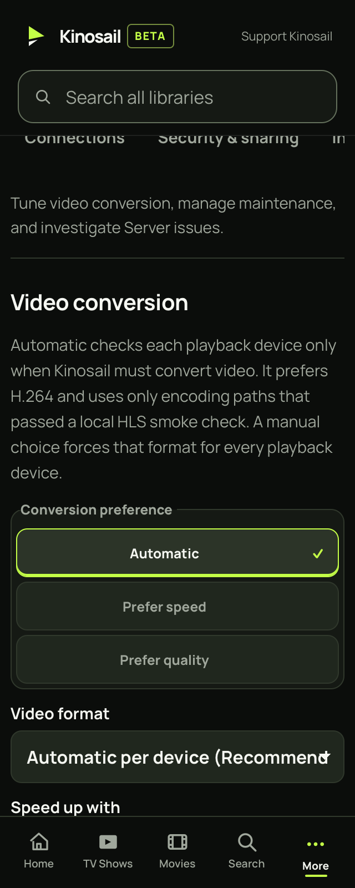
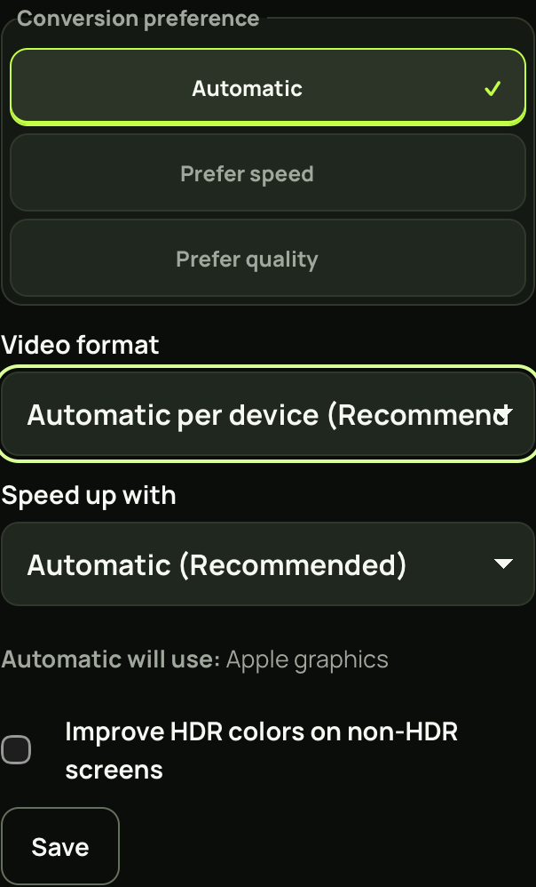
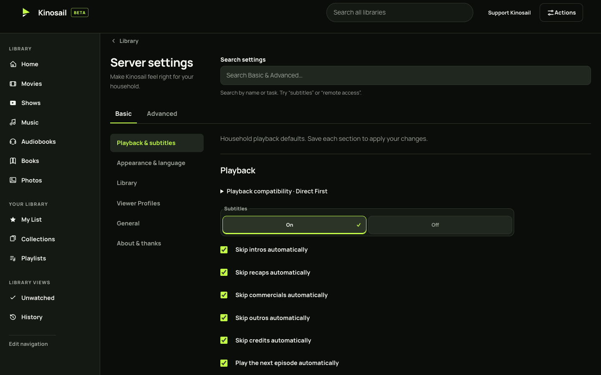
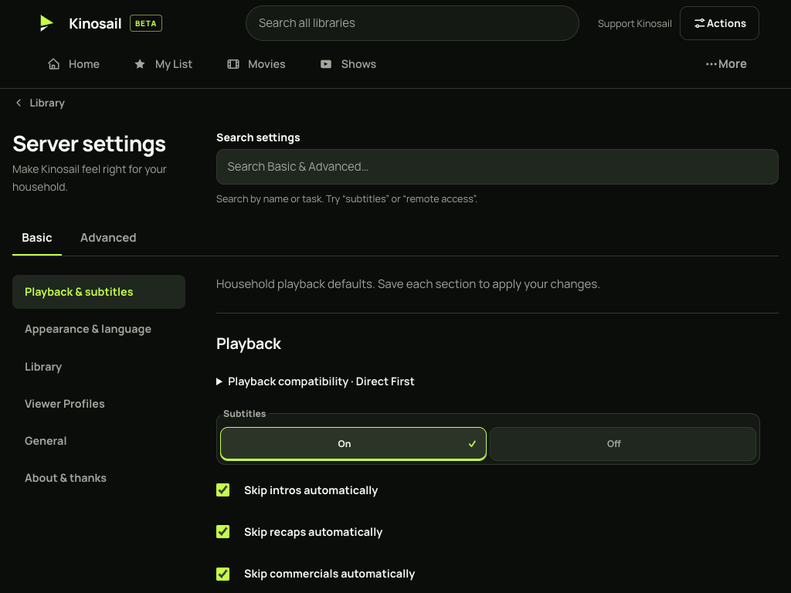
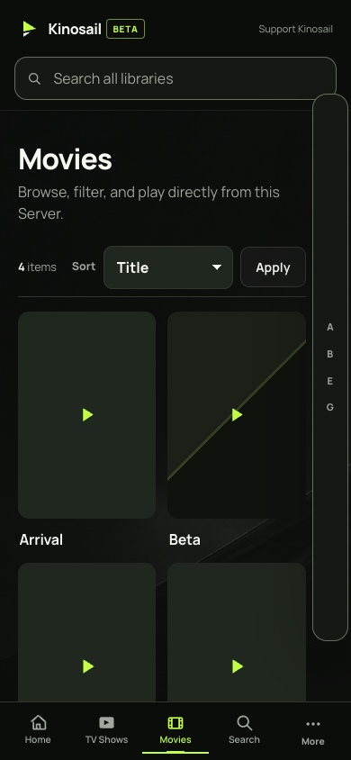
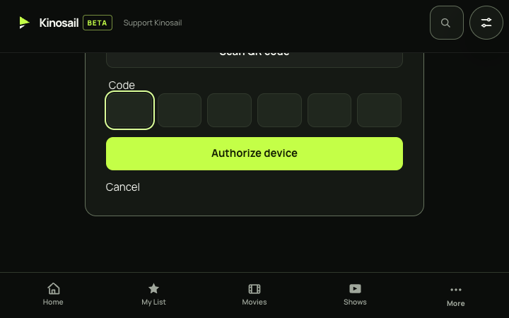

Player responsive layout audit
Populated renders with synthetic library data. The settings dropdown fix keeps long selected text inside the control. Other captures document the current navigation and refreshed browser checks. Select a capture to view it at full size.
Audit report · Commands and evidence hashes

Before · 320px WebKit · full viewport · 323px document width

After · 320px WebKit · form section · 320px document width

1440px · Desktop settings

1024px · Intermediate navigation

390px · Populated Movies · generated artwork and missing-art fallback

720 × 450px · Quick Connect after scrolling to primary actions